ButtonSpec
Some Krypton controls allow buttons to be specified for display within the Krypton control itself. In the case of the KryptonHeader and KryptonHeaderGroup they are displayed in the header portions of the control. In order to support this capability they expose a collection property called ButtonSpecs. This collection can contain any number of ButtonSpec (Button Specification) instances that describe the button that is required for display. Figure 1 below shows the ButtonSpecs property as it is exposed by the KryptonHeader control.
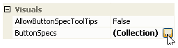
Figure 1 - ButtonSpecs property on KryptonHeader
ButtonSpec Instances
On clicking the property button the standard collection editor is displayed as a modal dialog box. You can then use the collection editor to create and remove individual ButtonSpec instances. On the right side of the collection editor you will see the properties of the currently selected ButtonSpec instance. Figure 2 shows the properties that are exposed for a ButtonSpec instance.
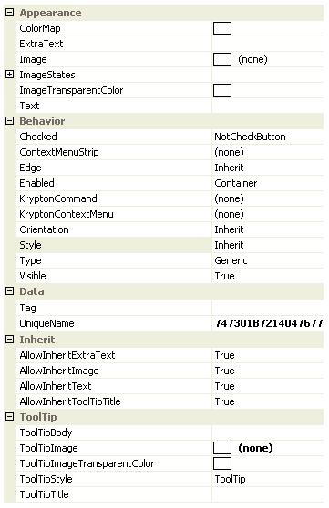
Figure2 - ButtonSpec properties in collection editor
To describe the function of the different properties a KryptonHeader control will be used. Figure 3 shows a simple KryptonHeader *instance that has been created and currently does not have any *ButtonSpec instances added.
Figure 3 - KryptonHeader with no buttons
Text, ExtraText, Image, ImageStates and ImageTransparentColor
The ButtonSpec exposes the same value properties as a KryptonButton instance. You can assign text for display by setting the Text and ExtraText properties. To show an image you use the Image property and if you need per-state images then you can use the properties available as children of ImageStates. If you need to specify which color in the Image should be transparent then use the ImageTransparentColor property. Figure 4 shows a red cross assigned to the Image property and all other properties of the ButtonSpec left as default values. At the top of figure 4 is the output when the mouse is not interacting with the button, the second picture shows the mouse tracking over the button and finally when the mouse is pressed down.
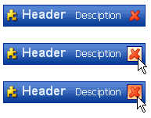
Figure 4 - Button in normal, tracking and pressed states
If you need to show different images for each of the button states then instead of using the Image property you would assign the different images to the child properties of ImageStates. You would not usually define all of the Text, ExtraText and Image properties together because of the excessive amount of space they would occupy but Figure 5 shows that it is possible.
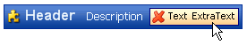
Figure 5 - ButtonSpec with Image, Text & ExtraText defined
ToolTipTitle, ToolTipBody, ToolTipImage, ToolTipImageTransparentColor and
ToolTipStyle These properties are used to specify the tool tip details for display when the user hovers over the button spec instance. Use the ToolTipTitle and ToolTipBody properties to define two text strings for display. To associate an image with the tool tip you should assign it to ToolTipImage and use the ToolTipImageTransparentColor for specifying a color in the image that should be treated as transparent. For example, many bitmaps will use magenta as a color for the background area that should become transparent when the bitmap is drawn, in that case assign Color.Magenta to the ToolTipImageTransparentColor property.
The default value for the ToolTipStyle is LabelStyle.ToolTip and will cause the image and title text to be shown at the top of the tool tip area and the body text to be shown below. Alternatively you could change the style to LabelStyle.SuperTip in which case the title text is shown in bold at the top of the tool tip area, the image in shown below with the title also below and to the right of the image.
Note that by default the Krypton controls that allow the definition of button specification do not show tool tips for them. You must therefore find the appropriate property such as AllowButtonSpecTooltips and set it to True before tool tips will be displayed.
Style
By default the button will be displayed using the ButtonSpec button style appearance. Note that the Standalone button style is intended for use with standard buttons within the main application, LowProfile is likewise intended for standalone buttons that need a lower profile. ButtonSpec, *as the name indicates, is intended for use with button specification scenarios and has a much smaller padding between the button contents and the border. This is because space is very constrained in places that a *ButtonSpec is used and so the button needs to be kept compact.
If you prefer to change the default ButtonSpec button style then just modify the Style property. Figure 6 shows the appearance when the Style is altered to Standalone, where a background and border are shown even when the mouse is not over the button.
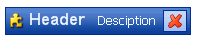
Figure 6 - Style = Button1
Edge
All the examples so far have shown the button placed on the right hand side of the example KryptonHeader. This is the default, Far, position but you can reverse this to have the button shown Near. Figure 7 shows the Edge property modified to Near.
Figure 7 - Edge = Near
Enabled
The Enabled property has three possible values. If you specify Enabled as True then the button will be enabled as long as the control itself is also enabled. Remember that if the Krypton control itself has been disabled then each ButtonSpec must be disabled because the user has been prevented from interacting with the control. If you specify Enabled as False then the button is always displayed as disabled as can seen in figure 8.
The third possible Enabled property value is Container. The need for three different enabled options is not apparent on a simple control like a KryptonHeader but is required for more complex controls like the KryptonNavigator. The Container option acts the same as the True setting for simple controls where the whole control is the container. If the control (which is also the container) is enabled then so is the ButtonSpec, if the control is disabled then so is the ButtonSpec. Hence the True and Container options act in exactly the same way. For the KryptonNavigator, and other complex controls, the container is not the whole control and so the semantics are altered. Refer to the documentation for the complex control for control specific details.
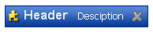
Figure 8 - Enabled = False
Visible
By default the Visible property is defined as True so that the ButtonSpec is shown. Alter this to False to remove it from the display.
Checked
If you need your ButtonSpec to act like a toggle button instead of the default push button then you need to alter the Checked property. The default value of this property is NotCheckButton and so it is always drawn as a standard push button. If you alter the property to either Checked or Unchecked then pressing the button with cause it to toggle between those two values. Figure 9 shows the Checked property defined as Checked.
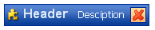
Figure 9 - Checked = Checked
Type
By default the Type property for a new ButtonSpec is defined as Generic. This means the button has no predefined meaning and you must supply the image and text that you would like displayed. There are however some common types of button and you can indicate that your button should be of that predefined type. In these case the image and text are inherited from the palette if you do not provide them yourself in the ButtonSpec properties. Figure 10 shows four of the predefined types of Previous, Next, Context and Close and the images that are inherited from the palette. There are other predefined types including ArrowUp, ArrowDown, ArrowLeft, ArrowRight, FormClose, FormMin, FormMax and FormRestore.
Because the image and text values are inherited for predefined types you need a mechanism to specify no image or no text. If you leave the Image property blank then the image is pulled in from the palette. But what if you really do not want any image? Then you can assign False to the AllowImageInherit property. Likewise you can use the AllowTextInherit and AllowExtraTextInherit to prevent the text values from being inherited.
Figure 10 - Previous, Next, Context and Close types
Orientation
What happens to the display of the buttons when the owning control has a different orientation? Figure 11 shows that by default the buttons are also rotated in the same way as the owning control. However this might not always be appropriate for your application as the Previous and Next predefined types no longer point left and right respectively.
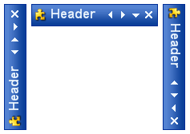
Figure 11 - Orientation = Auto
This is purpose of the Orientation property on the ButtonSpec. The default value of Auto will cause the button to be rotated in line with the owning control as seen above. You can however fix the orientation of the ButtonSpec to a particular value. Figure 12 shows the Orientation property defined as FixedTop which now makes more sense to the user.
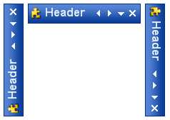
Figure 12 - Orientation = FixedTop
ColorMap
If you look at Figure 13 you will see that four predefined types have been used on to KryptonHeader controls, the top header is using a Header1 style and the bottom header Header2 style. Although the builtin palette has only a single black image for each predefined type the headers are still showing the images colored appropriately for each header style. This is where the ColorMap property comes into play.
When the ColorMap property is defined as a color then the button will remap that specified color to the color used for drawing the main content text. As can be seen in figure 13 the top header is using white for the main content text and the second header is used black, hence the buttons have been re mapped from black to the appropriate color. The ColorMap value is inherited from the palette and so when you specify a predefined type of Close the palette will automatically map the black that is used in the Close image. When you specify your own image or use the Generic type then you would need to set the ColorMap manually to get the functionality.
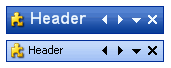
Figure 13 - Types with default color re mapping
It is not just the image that is re mapped but also the text as well. Figure 14 shows a ButtonSpec that is defined as the Close type and where additional Text has been provided as well. In the top picture you can see that text is also in white to match the main content color. The second picture shows the main text changed to green and also how the re mapping is continuing to work.
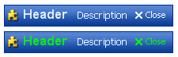
Figure 14 - Color re mapping
Mnemonics
As with the standard KryptonButton you can use the ampersand character to place an underline with the following character. If the owning control that contains the ButtonSpec definition processes a mnemonic character then it will check each ButtonSpec to see if the mnemonic matches it. If so then the Click event for the ButtonSpec will be fired. Check that the owning control has the UseMnemonic property defined as True.
ContextMenuStrip
If you assign a ContextMenuStrip reference to the property of the same name then clicking the button will cause the context menu to be displayed. Note that this property is only used if the KryptonContextMenu property is not defined.
KryptonContextMenu
Clicking the button will cause this context menu to be shown below the button on the screen. This property takes precedence over the ContextMenuStrip property as defined above. Only if this property is null will the ContextMenuStrip be tested and used instead. Use of the context menu properties is a quick way to add context functionality to a KryptonHeader, KryptonHeaderGroup, KryptonRibbon or KryptonNavigator control.
UniqueName
As the name suggests, this field allows the developer to assign a unique name to the button specification. By default each new instance will be assigned a new GUID generated from the operating system to ensure uniqueness. As these are not easy to remember it is recommended you alter the property to a more meaningful value if you intend to make use of the property
Tag
Use this to associate your application specific information with the button spec instance.
Click Event
The standard Click event is fired whenever the user presses the button represented by the button specification.